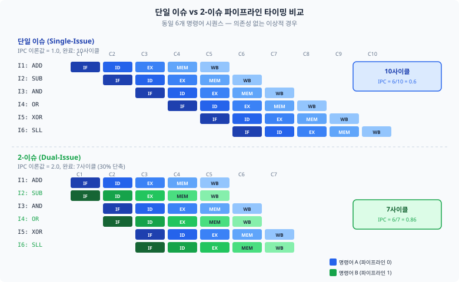
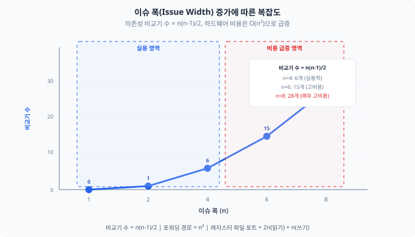
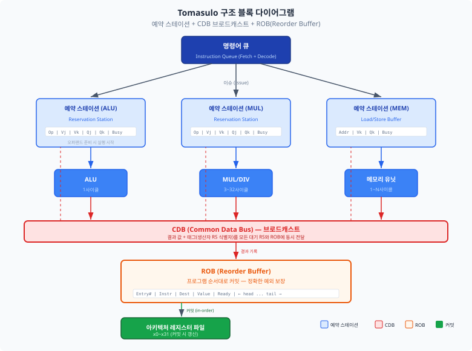
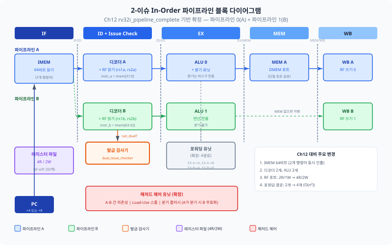

Ch12에서 완성한 5단계 파이프라인 프로세서의 CPI는 약 1.2였습니다.
만약 CPI가 1.0 미만인 — 즉 한 사이클에 명령어를 하나 이상 실행하는 —
프로세서를 만들 수 있다면 어떨까요?
이 챕터에서는 현대 고성능 프로세서의 핵심 기법인 슈퍼스칼라(superscalar) 구조,
토너먼트 분기 예측기(tournament branch predictor), 비순차 실행(out-of-order execution)을
개념적으로 탐구하고, 간단한 2-이슈(2-issue) 구조를 직접 설계합니다.
Ch12에서 버블정렬을 파이프라인에서 실행했을 때, CPI는 약 1.2였습니다.
이상적인 파이프라인이라면 매 사이클 하나의 명령어를 완료하여 CPI = 1.0이지만,
분기 페널티와 Load-Use 스톨 때문에 실제로는 1보다 높았습니다.
그런데 현대의 고성능 프로세서 — Intel Core, AMD Zen, Apple M 시리즈 — 는
IPC(Instructions Per Cycle)가 3~6에 달합니다.
어떻게 이것이 가능할까요?
이 챕터는 Part 9 "심화 주제"에 속합니다.
여기서 다루는 기법은 Basys 3 FPGA에 직접 구현하기에는 너무 복잡하지만,
개념을 이해하면 상용 프로세서 아키텍처 문서를 읽을 수 있고,
반도체 설계 면접에서 자신 있게 답변할 수 있습니다.
23.2절의 토너먼트 분기 예측기만이 유일하게 Basys 3에서 합성할 수 있는 수준이며,
나머지 절은 개념 이해와 의사코드 수준의 설계에 집중합니다.
23.1 슈퍼스칼라 기초 개념
지금까지 만든 파이프라인은 매 사이클 명령어 하나를 인출(fetch)하고,
디코딩하고, 실행합니다. 이를 단일 이슈(single-issue) 프로세서라 합니다.
IPC(Instructions Per Cycle, 사이클당 명령어 수)의 이론적 최댓값은 1.0이며,
해저드 때문에 실제로는 그 미만입니다.
IPC > 1: 한 사이클에 여러 명령어를 실행하려면
만약 한 사이클에 명령어 두 개를 동시에 인출하고, 디코딩하고,
실행할 수 있다면? IPC의 이론적 최댓값이 2.0으로 올라갑니다.
이것이 슈퍼스칼라(superscalar) 프로세서의 핵심 아이디어입니다.
동시에 발급하는 명령어의 수를 이슈 폭(issue width)이라 하며,
현대 프로세서는 보통 4~8의 이슈 폭을 갖습니다.
비유 — 마트 계산대:
계산대가 1개인 마트(단일 이슈)에서는 고객이 한 줄로 서서 한 명씩 계산합니다.
계산대를 2개로 늘리면(2-이슈) 두 고객이 동시에 계산할 수 있어 처리량이 두 배가 됩니다.
그러나 "고객 A가 먼저 계산해야 B가 할인 쿠폰을 받을 수 있다"는 의존성이 있으면
동시 계산이 불가능합니다. 또한 무게 측정 저울이 1대뿐이면(자원 충돌)
두 계산대가 동시에 과일을 처리할 수 없습니다.
한계: 실제 슈퍼스칼라는 물리적으로 분리된 계산대가 아니라,
하나의 파이프라인 내에서 여러 명령어가 동시에 흐르는 구조입니다.
비유는 직관적 이해를 위한 것이며, 이후 정확한 하드웨어 구조로 전환하겠습니다.
2-이슈 파이프라인의 타이밍
다음 6개 명령어 시퀀스를 살펴보겠습니다.
의존성이 없는 이상적인 경우, 단일 이슈 파이프라인은 10사이클이 필요하지만
2-이슈 파이프라인은 7사이클이면 충분합니다.

그림 23.1: 동일한 6개 명령어의 실행 타이밍 비교.
단일 이슈(위)는 사이클 1~10에서 순차 실행, 2-이슈(아래)는 명령어 쌍을 동시 발급하여 사이클 1~7에서 완료합니다.
동시 발급의 조건
두 명령어를 동시에 발급하려면 다음 세 가지 조건을 모두 만족해야 합니다.
데이터 의존성 없음: 두 번째 명령어가 첫 번째 명령어의 결과를 소스로 사용하면 안 됩니다 (RAW 해저드).
자원 충돌 없음: 두 명령어가 같은 기능 유닛(ALU, 메모리 포트 등)을 동시에 필요로 하면 안 됩니다.
제어 의존성 없음: 첫 번째 명령어가 분기이면, 두 번째 명령어의 유효성이 불확실하므로 동시 발급이 제한됩니다.
이 조건을 검사하는 로직을 발급 검사기(issue checker)라 합니다.
다음은 2개 명령어의 동시 발급 가능 여부를 판단하는 SystemVerilog 코드입니다.
// 2-이슈 발급 검사기 (dual-issue checker)
// 명령어 A(첫 번째)와 명령어 B(두 번째)의 동시 발급 가능 여부 판정
module dual_issue_checker (
input logic [4:0] a_rd, // 명령어 A의 목적 레지스터
input logic a_reg_wen, // 명령어 A의 레지스터 쓰기 여부
input logic a_is_branch, // 명령어 A가 분기/점프인가
input logic a_is_mem, // 명령어 A가 메모리 접근인가
input logic [4:0] b_rs1, // 명령어 B의 소스 레지스터 1
input logic [4:0] b_rs2, // 명령어 B의 소스 레지스터 2
input logic b_use_rs1, // 명령어 B가 rs1을 사용하는가
input logic b_use_rs2, // 명령어 B가 rs2를 사용하는가
input logic b_is_mem, // 명령어 B가 메모리 접근인가
output logic can_dual // 동시 발급 가능 여부
);
logic raw_hazard; // RAW 의존성 존재
logic res_conflict; // 자원 충돌 존재
logic ctrl_dep; // 제어 의존성 존재
// RAW 검사: A의 rd가 B의 rs1 또는 rs2와 일치하면 의존성
assign raw_hazard = a_reg_wen && (a_rd != 5'd0) &&
((b_use_rs1 && (a_rd == b_rs1)) ||
(b_use_rs2 && (a_rd == b_rs2)));
// 자원 충돌 검사: 두 명령어 모두 메모리 접근이면 포트 충돌
assign res_conflict = a_is_mem && b_is_mem;
// 제어 의존성: A가 분기이면 B 발급 보류
assign ctrl_dep = a_is_branch;
// 세 조건 모두 만족해야 동시 발급 가능
assign can_dual = ~raw_hazard && ~res_conflict && ~ctrl_dep;
endmodule
복잡도의 폭발적 증가
이슈 폭을 n으로 확장하면, 의존성 검사 비교기의 수는
O(n2)로 증가합니다.
2-이슈에서는 비교기 2개로 충분하지만, 4-이슈에서는 12개,
8-이슈에서는 56개의 비교기가 필요합니다.
이슈 폭을 늘릴수록 임계 경로(critical path)가 길어지고,
클럭 주파수가 하락하여 이슈 폭 증가의 이점을 상쇄합니다.

그림 23.2: 이슈 폭(n) 증가에 따른 의존성 비교기 수(n(n-1)/2)와 클럭 주파수의 트레이드오프.
이슈 폭 4를 넘으면 IPC 향상 대비 하드웨어 비용이 급증합니다.
23.2 토너먼트 분기 예측기
Ch11에서 2-bit 포화 카운터 기반 BHT(Branch History Table)를 구현했습니다.
분기 명령어의 PC 하위 비트로 테이블을 인덱싱하여, 해당 분기가 taken일지
not-taken일지를 예측하는 간단한 동적 예측기였습니다.
이 방식의 예측 정확도는 일반적인 프로그램에서 약 85~90%입니다.
상용 프로세서는 95% 이상의 정확도를 요구하는데,
이를 어떻게 달성할 수 있을까요?
지역 예측기(Local Predictor)
Ch11의 BHT는 각 분기의 개별 이력만 기록합니다.
for 루프의 분기는 대부분 taken이다가 마지막에만 not-taken이 되므로,
이런 패턴에 강합니다. 이 방식을 지역 예측기(local predictor)라 합니다.
지역 예측기는 각 분기마다 독립적인 이력 레지스터(LHR, Local History Register)를 유지하고,
이 이력으로 PHT(Pattern History Table)를 인덱싱합니다.
LHR(Local History Register): 각 분기의 최근 k번 결과를 시프트 레지스터에 기록. 예: TTNTTN → 6'b110110
PHT(Pattern History Table): LHR 값을 인덱스로 사용하여 2-bit 포화 카운터를 조회. 패턴별 예측을 수행합니다.
전역 예측기(Global Predictor)
일부 분기는 다른 분기의 결과와 상관관계가 있습니다.
예를 들어, if (x > 0)가 참이면 바로 다음의
if (x > 10)도 특정 패턴을 보입니다.
이런 분기 간 상관관계(inter-branch correlation)를 포착하려면
모든 분기의 결과를 하나의 레지스터에 기록해야 합니다.
이것이 GHR(Global History Register)입니다.
그림 23.3: 전역 예측기의 PHT 인덱싱 방식.
GHR의 m비트와 PC 하위 m비트를 XOR하여 PHT 주소를 생성합니다.
이를 gshare 방식이라 합니다.
비유 — 날씨 예보관의 진화:
Ch11에서 "동네 할머니"가 "어제 비가 왔으니 오늘도 올 것이다"라고 예측했습니다(2-bit 카운터).
이제 두 명의 전문 예보관이 등장합니다.
지역 기상 관측소(지역 예측기)는 "이 동네의 최근 일주일 날씨 패턴"을 분석하고,
위성 기반 전국 예보 센터(전역 예측기)는 "전국적인 기압 배치 흐름"을 분석합니다.
기상청장(토너먼트 선택기)은 최근 어느 예보관이 더 정확했는지를 추적하고,
더 정확했던 쪽의 예보를 채택합니다.
한계: 실제 예측기는 PC 주소 기반 인덱싱이므로 지리적 개념과 직접 매핑되지 않습니다.
이 비유는 "두 예측 방식을 동적으로 선택한다"는 핵심만 전달합니다.
토너먼트 선택기(Tournament Selector)
지역 예측기와 전역 예측기는 각각 다른 분기 패턴에서 강점을 보입니다.
토너먼트 분기 예측기(tournament branch predictor)는 이 두 예측기를 동시에 운영하고,
선택 카운터(chooser counter)를 사용하여 최근 더 정확했던 예측기의 결과를 채택합니다.
두 예측기의 예측이 동일하면 → 선택 카운터 변화 없음
지역 예측기만 정확 → 선택 카운터를 "지역 쪽"으로 1 감소
전역 예측기만 정확 → 선택 카운터를 "전역 쪽"으로 1 증가
둘 다 틀리면 → 선택 카운터 변화 없음
그림 23.4: 토너먼트 분기 예측기 구조.
지역 예측기와 전역 예측기가 독립적으로 예측하고,
선택기(2-bit 카운터)가 최근 더 정확했던 예측기의 결과를 최종 예측으로 출력합니다.
SystemVerilog 구현
다음은 토너먼트 분기 예측기의 합성 가능한 SystemVerilog 구현입니다.
Ch11의 2-bit BHT를 지역/전역 두 개로 확장하고, 선택기를 추가한 구조입니다.
파라미터화하여 테이블 크기를 조절할 수 있도록 설계하였습니다.
module tournament_predictor #(
parameter PHT_BITS = 8, // PHT 엔트리 수 = 2^PHT_BITS
parameter GHR_BITS = 8, // 전역 이력 비트 수
parameter LHR_BITS = 6, // 지역 이력 비트 수
parameter LHT_BITS = 6 // 지역 이력 테이블 엔트리 = 2^LHT_BITS
)(
input logic clk,
input logic rst_n,
// 예측 인터페이스
input logic [31:0] pred_pc, // 예측할 분기의 PC
output logic pred_taken, // 최종 예측 결과
// 갱신 인터페이스
input logic update_valid, // 갱신 유효
input logic [31:0] update_pc, // 갱신할 분기의 PC
input logic update_taken // 실제 분기 결과
);
// ── 전역 예측기 (gshare) ──
logic [GHR_BITS-1:0] ghr; // 전역 이력 레지스터
logic [1:0] global_pht [0:2**PHT_BITS-1]; // 전역 PHT
// ── 지역 예측기 ──
logic [LHR_BITS-1:0] lhr [0:2**LHT_BITS-1]; // 지역 이력 테이블
logic [1:0] local_pht [0:2**LHR_BITS-1]; // 지역 PHT
// ── 선택기 ──
logic [1:0] chooser [0:2**PHT_BITS-1]; // 선택 카운터
// ── 예측 로직 ──
logic [PHT_BITS-1:0] global_idx, chooser_idx;
logic [LHT_BITS-1:0] local_lht_idx;
logic [LHR_BITS-1:0] local_pht_idx;
logic local_pred, global_pred;
// gshare 인덱싱: PC XOR GHR
assign global_idx = pred_pc[PHT_BITS+1:2] ^ ghr[PHT_BITS-1:0];
assign chooser_idx = pred_pc[PHT_BITS+1:2];
// 지역 예측기 인덱싱
assign local_lht_idx = pred_pc[LHT_BITS+1:2];
assign local_pht_idx = lhr[local_lht_idx];
// 각 예측기의 예측 (MSB가 1이면 taken)
assign global_pred = global_pht[global_idx][1];
assign local_pred = local_pht[local_pht_idx][1];
// 선택기: MSB 1이면 전역 선택, 0이면 지역 선택
assign pred_taken = chooser[chooser_idx][1] ? global_pred : local_pred;
// ── 갱신 로직 ──
logic [PHT_BITS-1:0] upd_global_idx, upd_chooser_idx;
logic [LHT_BITS-1:0] upd_lht_idx;
logic [LHR_BITS-1:0] upd_local_pht_idx;
logic upd_global_pred, upd_local_pred;
assign upd_global_idx = update_pc[PHT_BITS+1:2] ^ ghr[PHT_BITS-1:0];
assign upd_chooser_idx = update_pc[PHT_BITS+1:2];
assign upd_lht_idx = update_pc[LHT_BITS+1:2];
assign upd_local_pht_idx = lhr[upd_lht_idx];
assign upd_global_pred = global_pht[upd_global_idx][1];
assign upd_local_pred = local_pht[upd_local_pht_idx][1];
int i;
always_ff @(posedge clk or negedge rst_n) begin
if (!rst_n) begin
ghr <= '0;
for (i = 0; i < 2**PHT_BITS; i++) global_pht[i] <= 2'b01; // 약하게 not-taken
for (i = 0; i < 2**LHR_BITS; i++) local_pht[i] <= 2'b01;
for (i = 0; i < 2**LHT_BITS; i++) lhr[i] <= '0;
for (i = 0; i < 2**PHT_BITS; i++) chooser[i] <= 2'b10; // 약하게 전역 선택
end else if (update_valid) begin
// 전역 PHT 갱신 (2-bit 포화 카운터)
if (update_taken && global_pht[upd_global_idx] < 2'b11)
global_pht[upd_global_idx] <= global_pht[upd_global_idx] + 1;
else if (!update_taken && global_pht[upd_global_idx] > 2'b00)
global_pht[upd_global_idx] <= global_pht[upd_global_idx] - 1;
// 지역 PHT 갱신
if (update_taken && local_pht[upd_local_pht_idx] < 2'b11)
local_pht[upd_local_pht_idx] <= local_pht[upd_local_pht_idx] + 1;
else if (!update_taken && local_pht[upd_local_pht_idx] > 2'b00)
local_pht[upd_local_pht_idx] <= local_pht[upd_local_pht_idx] - 1;
// 선택기 갱신: 예측이 다를 때만
if (upd_global_pred != upd_local_pred) begin
if (upd_global_pred == update_taken && chooser[upd_chooser_idx] < 2'b11)
chooser[upd_chooser_idx] <= chooser[upd_chooser_idx] + 1;
else if (upd_local_pred == update_taken && chooser[upd_chooser_idx] > 2'b00)
chooser[upd_chooser_idx] <= chooser[upd_chooser_idx] - 1;
end
// GHR 갱신 (시프트 + 최신 결과 삽입)
ghr <= {ghr[GHR_BITS-2:0], update_taken};
// LHR 갱신
lhr[upd_lht_idx] <= {lhr[upd_lht_idx][LHR_BITS-2:0], update_taken};
end
end
endmodule
예측 정확도 측정
토너먼트 예측기의 성능을 정량적으로 평가하려면
예측 정확도(prediction accuracy)를 측정해야 합니다.
테스트벤치에서 분기 시퀀스를 입력하고, 예측 성공/실패 횟수를 카운팅합니다.
일반적인 분기 패턴(루프, if-else 체인)에서 토너먼트 예측기는
단순 2-bit BHT 대비 5~10% 정확도 향상을 보입니다.
예측기
단순 루프
if-else 체인
상관 분기
평균
2-bit BHT (Ch11)
~90%
~80%
~75%
~85%
토너먼트 (이 절)
~95%
~90%
~92%
~93%
23.3 비순차 실행 개요
지금까지의 파이프라인은 순차 실행(in-order execution)입니다.
명령어가 프로그램 순서대로 인출되고, 순서대로 실행되고, 순서대로 완료됩니다.
그런데 다음과 같은 상황을 생각해 보겠습니다.
// 명령어 시퀀스 예시
// I1: LW x1, 0(x10) // 캐시 미스! 12사이클 대기
// I2: ADD x2, x1, x3 // I1에 의존 (RAW) → 대기
// I3: MUL x4, x5, x6 // I1, I2와 무관 → 실행 가능!
// I4: SUB x7, x4, x8 // I3에 의존 → I3 이후 실행 가능
순차 실행에서는 I1이 캐시 미스로 12사이클을 기다리는 동안
I3와 I4도 함께 대기합니다. I3와 I4는 I1과 전혀 무관한데도 말입니다.
비순차 실행(out-of-order execution, OOO)은
"데이터가 준비된 명령어부터 먼저 실행"하여 이 낭비를 제거합니다.
비유 — 식당 주방의 주문 관리:
주문이 들어온 순서대로만 요리하면(in-order), "스테이크 굽는 15분" 동안
샐러드와 스프가 완성되지 않습니다. 비순차 실행은 재료가 준비된 요리부터
먼저 조리하되, 서빙은 반드시 주문 순서대로 합니다.
예약 스테이션(Reservation Station) = 재료 대기 공간. 재료(오퍼랜드)가 모두 도착하면 조리(실행) 시작.
CDB(Common Data Bus) = 완성된 요리를 알리는 호출 벨. "스테이크 완성!"이 울리면, 스테이크를 기다리던 소스 요리가 시작됨.
ROB(Reorder Buffer) = 서빙 순서 대기표. 주문 번호 순서대로 서빙하여 고객(프로그래머)이 순서가 바뀐 것을 모르게 합니다.
한계: 실제 하드웨어는 클럭 단위로 동작하며, 요리처럼 가변 시간이 아닌
고정 레이턴시 파이프라인입니다. 이 비유는 "순서를 바꿔 실행하되, 커밋은 순서대로"라는
핵심만 전달합니다.
Tomasulo 알고리즘
1967년 IBM 360/91에서 Robert Tomasulo가 발명한 이 알고리즘은
비순차 실행의 기초가 되었습니다. 핵심은 세 가지입니다.
예약 스테이션(Reservation Station, RS):
각 기능 유닛(ALU, 곱셈기, 메모리 유닛) 앞에 배치된 대기열입니다.
명령어가 디코딩되면 예약 스테이션에 진입하고,
소스 오퍼랜드가 모두 준비되면 실행을 시작합니다.
오퍼랜드가 아직 준비되지 않았다면, 해당 오퍼랜드를 "생산할 예약 스테이션의 태그"를 기록하고 대기합니다.
공통 데이터 버스(Common Data Bus, CDB):
기능 유닛이 결과를 생산하면 CDB를 통해 브로드캐스트합니다.
이 결과를 기다리던 모든 예약 스테이션이 동시에 값을 수신하여
"포워딩"이 자동으로 이루어집니다.
레지스터 리네이밍(Register Renaming):
WAW/WAR 해저드를 제거합니다. 아키텍처 레지스터(x0~x31)와 별도로
물리 레지스터를 두고, 명령어가 쓰기할 때마다 새 물리 레지스터를 할당합니다.
이름 의존성이 사라지므로 RAW만 남습니다.

그림 23.5: Tomasulo 구조.
명령어 큐에서 디코딩된 명령어가 예약 스테이션으로 이슈되고,
오퍼랜드 준비 시 기능 유닛에서 실행됩니다.
결과는 CDB를 통해 브로드캐스트되어 대기 중인 예약 스테이션과 ROB에 전달됩니다.
명령어 추적 예제
앞의 4개 명령어(I1~I4)가 Tomasulo 구조에서 어떻게 실행되는지 추적해 보겠습니다.
편의상 LW 미스 페널티는 4사이클, MUL은 3사이클, ADD/SUB는 1사이클로 가정합니다.
명령어
이슈
실행 시작
실행 완료
CDB 기록
커밋
비고
I1: LW x1, 0(x10)
C1
C2
C5
C6
C7
캐시 미스 4사이클
I2: ADD x2, x1, x3
C2
C7
C7
C8
C9
I1 대기 → C6에 x1 수신
I3: MUL x4, x5, x6
C3
C3
C5
C6
C10
의존성 없음 → 즉시 실행
I4: SUB x7, x4, x8
C4
C7
C7
C8
C11
I3 대기 → C6에 x4 수신
주목할 점: I3는 I1보다 먼저 실행을 완료합니다(둘 다 C5에 완료).
그러나 커밋은 I1 → I2 → I3 → I4 순서를 엄격히 지킵니다.
이것이 ROB(Reorder Buffer)의 역할입니다.
순차 실행이었다면 I3는 C6까지 대기해야 했지만,
비순차 실행 덕분에 C3에 바로 실행을 시작할 수 있었습니다.
In-Order vs Out-of-Order 비교
항목
In-Order (Ch12)
Out-of-Order
실행 순서
프로그램 순서
데이터 준비 순서
커밋 순서
프로그램 순서
프로그램 순서 (ROB)
해저드 해결
포워딩 + 스톨
예약 스테이션 + CDB + 리네이밍
IPC
~0.8 (실측)
~2.0~4.0
하드웨어 복잡도
낮음
매우 높음 (면적 3~5배)
전력 소모
낮음
높음 (모바일 vs 서버 트레이드오프)
대표 프로세서
ARM Cortex-M, RISC-V 교육용
Intel Core, AMD Zen, Apple M
23.4 미니 설계 과제: 간단한 2-이슈 구조 설계
이제 Ch12에서 완성한 단일 이슈 5단계 파이프라인을 2-이슈 in-order 파이프라인으로
확장하는 설계 과제에 도전합니다.
"비순차 실행까지 가지 않더라도, 2-이슈만으로도 IPC를 의미 있게 향상시킬 수 있습니다."
설계 제약
기반 모듈: Ch12의 rv32i_pipeline_complete
이슈 폭: 2 (명령어 A + 명령어 B)
실행 방식: in-order (비순차 아님)
기능 유닛: ALU 2개 + 분기 유닛 1개 + 메모리 유닛 1개
명령어 메모리: 64비트 폭 (2개 명령어 동시 인출)
발급 조건: 23.1절의 dual_issue_checker 사용
블록 다이어그램

그림 23.6: 2-이슈 in-order 파이프라인 블록 다이어그램.
IF 스테이지에서 64비트(명령어 2개)를 인출하고, ID에서 발급 검사기가 동시 발급 여부를 판단합니다.
두 명령어가 동시 발급 불가능하면 B는 다음 사이클로 지연됩니다.
핵심 설계 결정
1. IF 스테이지: 64비트 인출
명령어 메모리의 데이터 폭을 32비트에서 64비트로 확장합니다.
한 번의 읽기로 2개 명령어를 가져옵니다.
단, PC가 8바이트 정렬되지 않은 경우(분기 목적지가 홀수 워드일 때),
첫 사이클에는 명령어 1개만 유효합니다.
2. ID 스테이지: 발급 판정
dual_issue_checker가 두 명령어의 동시 발급 가능 여부를 판정합니다.
가능하면 파이프라인 레지스터 A와 B 모두에 명령어를 전달하고,
불가능하면 A만 전달하고 B는 보류합니다.
3. EX 스테이지: 두 개의 ALU
ALU 0은 명령어 A의 연산을, ALU 1은 명령어 B의 연산을 수행합니다.
분기 명령어는 ALU 0에서만 처리합니다(자원 제약).
메모리 접근도 하나의 포트만 사용합니다.
다음은 2-이슈 파이프라인의 top-level 스켈레톤입니다.
TODO 주석이 달린 부분을 직접 채워 보십시오.
module rv32i_dual_issue_pipeline #(
parameter DATA_WIDTH = 32,
parameter ADDR_WIDTH = 32,
parameter RF_DEPTH = 32
)(
input logic clk,
input logic rst_n,
// 64비트 명령어 메모리 인터페이스
output logic [ADDR_WIDTH-1:0] imem_addr,
input logic [63:0] imem_rdata, // 2개 명령어 동시 인출
// 데이터 메모리 인터페이스 (단일 포트)
output logic [ADDR_WIDTH-1:0] dmem_addr,
output logic [DATA_WIDTH-1:0] dmem_wdata,
input logic [DATA_WIDTH-1:0] dmem_rdata,
output logic dmem_wen,
output logic [3:0] dmem_byte_en
);
// ── IF 스테이지 ──
logic [31:0] pc, pc_next;
logic [31:0] instr_a, instr_b;
logic dual_valid; // 두 번째 명령어 유효 여부
assign instr_a = imem_rdata[31:0];
assign instr_b = imem_rdata[63:32];
// PC 정렬 검사: PC[2]==0이면 두 명령어 모두 유효
assign dual_valid = ~pc[2];
// ── ID 스테이지 ──
// TODO: 명령어 A, B 디코딩
// TODO: 레지스터 파일 읽기 (4개 읽기 포트 필요: A의 rs1/rs2, B의 rs1/rs2)
// TODO: dual_issue_checker 인스턴스화
// ── EX 스테이지 ──
// TODO: ALU 0 (명령어 A용)
// TODO: ALU 1 (명령어 B용)
// TODO: 분기 유닛 (ALU 0 전용)
// TODO: 포워딩 유닛 확장 (4개 경로)
// ── MEM 스테이지 ──
// TODO: 메모리 접근 (명령어 A 또는 B 중 메모리 명령어만)
// ── WB 스테이지 ──
// TODO: 레지스터 파일 쓰기 (2개 쓰기 포트 필요)
// ── 해저드 제어 ──
// TODO: 데이터 해저드 감지 (A-B 간, 이전 사이클과의 의존성)
// TODO: 분기 플러시 (A가 분기일 때 B 무효화)
// TODO: Load-Use 스톨 확장
endmodule
성능 예측
2-이슈 in-order 파이프라인의 이론적 IPC는 2.0이지만,
실제로는 의존성과 자원 충돌로 인해 1.3~1.6 정도를 기대할 수 있습니다.
Ch12의 단일 이슈 파이프라인(IPC ~0.8) 대비 약 60~100% 향상입니다.
구현
이론 IPC
실측 IPC 범위
LUT 증가율
단일 이슈 (Ch12)
1.0
0.7~0.9
기준
2-이슈 in-order
2.0
1.3~1.6
~2.5배
4-이슈 OOO
4.0
2.0~3.5
~8배
핵심 정리
슈퍼스칼라: 한 사이클에 여러 명령어를 동시 발급하여 IPC > 1을 달성합니다.
이슈 폭 증가에 따라 의존성 검사 복잡도가 O(n2)로 증가합니다.
토너먼트 분기 예측기: 지역 예측기(개별 분기 이력)와 전역 예측기(전체 분기 이력)를
동시에 운영하고, 선택기가 최근 더 정확했던 예측기를 채택합니다.
Ch11의 2-bit BHT 대비 5~10% 정확도 향상을 달성합니다.
비순차 실행(OOO): 데이터가 준비된 명령어부터 먼저 실행하되,
ROB를 통해 프로그램 순서대로 커밋합니다.
예약 스테이션, CDB, 레지스터 리네이밍이 핵심 메커니즘입니다.
2-이슈 설계: Ch12의 파이프라인을 확장하여 2개 명령어를 동시에 처리합니다.
레지스터 파일 읽기 포트 4개, 쓰기 포트 2개, 포워딩 경로 4배 증가가 필요합니다.
연습문제
[기억] 토너먼트 분기 예측기의 세 가지 구성 요소를 나열하고,
각각의 역할을 한 문장으로 설명하십시오.
[이해] 2-이슈 파이프라인에서 두 명령어가 동시 발급될 수 없는 경우를
세 가지 나열하십시오. 각 경우에 대해 구체적인 명령어 쌍 예시를 제시하십시오.
[적용] 다음 분기 시퀀스가 주어졌을 때, 2-bit 포화 카운터(초기값 2'b01)의
상태 변화를 추적하십시오: T, T, T, N, T, T, N, N.
각 분기에서의 예측 결과(맞음/틀림)도 함께 표시하십시오.
[분석] 다음 명령어 시퀀스에서 2-이슈 파이프라인이 동시 발급할 수 있는 쌍을 모두 찾으십시오:
[분석] 전역 예측기(gshare)에서 GHR이 8비트이고 PHT가 256 엔트리일 때,
PC = 0x0000_1008, GHR = 8'b10110101이면
PHT 인덱스는 얼마입니까? 계산 과정을 보이십시오.
[평가] 토너먼트 예측기에서 지역 예측기와 전역 예측기가 동일한 예측을 내놓을 때
선택 카운터를 갱신하지 않는 이유를 설명하십시오.
만약 갱신한다면 어떤 문제가 발생할 수 있습니까?
[분석] 위의 I1~I4 Tomasulo 추적 표에서, 만약 I1이 캐시 히트여서
실행 완료가 C3이라면 I2, I3, I4의 이슈/실행/커밋 시점이 어떻게 변하는지
새로운 추적 표를 작성하십시오.
[평가] 모바일 프로세서(ARM Cortex-A55, in-order 2-이슈)와
고성능 프로세서(Intel Core i9, OOO 6-이슈)의 설계 결정을 비교하십시오.
각각의 목표 시장에서 해당 설계가 최적인 이유를 전력, 면적, IPC 관점에서 분석하십시오.
[창조] 23.4절의 스켈레톤 코드에서 ID 스테이지의 발급 판정 로직을 구현하십시오.
dual_issue_checker의 결과에 따라 파이프라인 레지스터 A, B에
명령어를 전달하는 로직을 SystemVerilog로 작성하되,
"동시 발급 불가 시 B를 보류하고 PC를 +4만 전진"하는 경우를 포함하십시오.
[평가] 슈퍼스칼라 프로세서에서 이슈 폭을 4에서 8로 두 배 늘리면,
의존성 비교기 수는 몇 배 증가합니까? 이 증가가 클럭 주파수에 미치는 영향을
정성적으로 분석하십시오.
[분석] Tomasulo 알고리즘에서 레지스터 리네이밍이 WAR 해저드를 어떻게 제거하는지,
구체적인 명령어 예제를 들어 설명하십시오.
(힌트: ADD x1, x2, x3 다음에 SUB x2, x4, x5가 오는 경우)
[평가] Ch11에서 구현한 2-bit BHT(256 엔트리)와
이 챕터의 토너먼트 예측기(PHT 256 엔트리 x 2 + LHR 64 x 6비트 + GHR 8비트 + 선택기 256)를
Basys 3의 LUT/FF 리소스 관점에서 비교하십시오.
정확도 향상 대비 하드웨어 비용이 정당한지 평가하십시오.
[창조]ch23_tournament_predictor.sv를 Ch11의 파이프라인에 통합하는
방법을 설계하십시오. 예측 시점(IF), 갱신 시점(EX), 미스프레딕션 시 GHR 복구 방법을
포함하는 블록 다이어그램을 그리십시오.
[평가] RISC-V의 간결한 ISA가 슈퍼스칼라 설계에 유리한 이유를
x86과 비교하여 3가지 이상 제시하십시오.
(힌트: 고정 길이 명령어, 레지스터 수, 메모리 접근 명령어 분리)
다음 챕터 예고
이 챕터에서 현대 프로세서의 성능 최적화 기법을 탐구했습니다.
다음 챕터(Ch24)에서는 RV32I에 M 확장(곱셈/나눗셈)과
F 확장(부동소수점)을 추가하여 프로세서의 기능을 확장합니다.
Basys 3의 DSP48E1 블록을 활용한 하드웨어 곱셈기 구현이 핵심입니다.
📁 전체 소스 코드
이 챕터에서 단계별로 설명한 모든 모듈의 완전한 소스 코드입니다.
본문에서 이미 각 코드의 동작 원리를 설명하였으므로, 지금 당장 전부를 이해하려 하지 않아도 됩니다.
이 코드는 학습 참고용으로 활용하십시오.